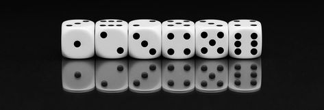

MATERI PELUANG

Video Pembelajaran
Halo! Sebelum kita memulai pembelajaran hari ini, mari kita saksikan sebuah video terlebih dahulu. Video ini akan memberikan gambaran yang menarik dan mudah dipahami mengenai materi peluang yang akan kita pelajari. Dalam video ini terdapat penjelasan-penjelasan penting yang akan mendukung pemahaman kalian dan membuat pembelajaran menjadi lebih interaktif. Jangan lupa untuk mencatat poin-poin penting yang disampaikan, karena kita akan mendiskusikannya lebih lanjut setelah menonton. Mari kita mulai!
Pengertian Peluang
Peluang adalah suatu cara untuk mengukur kemungkinan terjadinya suatu peristiwa. Nilai peluang selalu berada di antara 0 dan 1. Jika peluang suatu peristiwa adalah 0, maka peristiwa tersebut tidak mungkin terjadi. Jika peluang suatu peristiwa adalah 1, maka peristiwa tersebut pasti terjadi.
Rumus Dasar Peluang
Rumus dasar untuk menghitung peluang suatu kejadian adalah:
Keterangan:
- P(A) : Peluang kejadian A
- n(A) : Banyaknya hasil yang mendukung kejadian A
- n(S) : Banyaknya hasil dalam ruang sampel
Ruang Sampel
Ruang sampel adalah himpunan semua kemungkinan hasil dari suatu percobaan atau peristiwa. Dalam probabilitas, ruang sampel digunakan untuk menentukan semua hasil yang mungkin terjadi dalam suatu eksperimen. Misalnya, jika kita melempar sebuah koin, ruang sampelnya adalah {kepala, ekor}.
Contoh Ruang Sampel
Misalkan kita melempar dua buah koin sekaligus. Ruang sampelnya adalah:
Keterangan:
- KK : Kepala di koin pertama dan Kepala di koin kedua
- KE : Kepala di koin pertama dan Ekor di koin kedua
- EK : Ekor di koin pertama dan Kepala di koin kedua
- EE : Ekor di koin pertama dan Ekor di koin kedua
Rumus Ruang Sampel
Untuk menghitung jumlah kemungkinan hasil dalam ruang sampel, kita dapat menggunakan rumus kombinasi atau permutasi tergantung pada situasi eksperimen.
Macam-Macam Peluang
Ada beberapa macam peluang yang perlu diketahui:
- Peluang Empiris: Peluang yang diperoleh berdasarkan hasil pengamatan atau percobaan.
- Peluang Teoretis: Peluang yang diperoleh melalui perhitungan berdasarkan kemungkinan hasil yang ada.
Modul Ajar
Untuk memahami materi tentang peluang secara lebih mendalam, mari kita simak modul ajar yang telah disiapkan di bawah ini. Modul ini akan membantu Anda memahami konsep-konsep penting dan memberikan panduan yang jelas untuk setiap bagian materi. Berikut adalah Modul Ajar mengenai materi peluang: